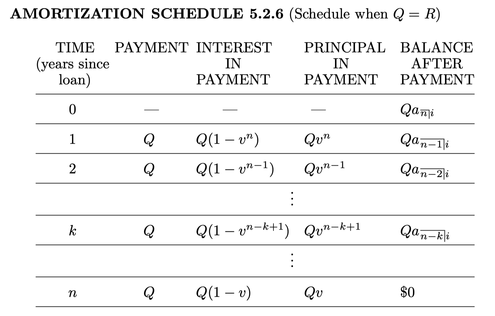
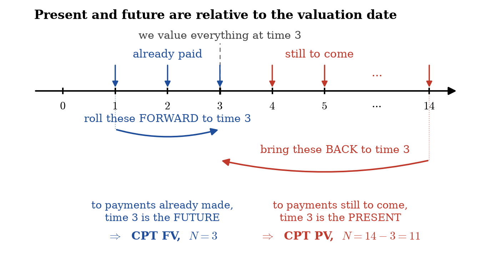

When a loan is an amortized loan, each payment is understood to consist of:
The chart (table) containing the payment amount, interest paid in each payment, principle repaid in each payment and the OLB after each payment is called the amortization schedule.
Consider a loan for \(1,000\) which is to be repaid in four annual payments under the effective annual interest rate of \(8\%\).
We assume that all payments are equal.
What is amount of each level payment?
The equation we just solved was \(1000 = Q\,a_{\overline{4}|0.08}\), with \(Q\) the unknown.
2ND CLR TVM |
clear | 4 N |
four annual payments |
8 I/Y |
\(8\%\) per year | 1 0 0 0 PV |
he receives the loan |
0 FV |
nothing owed at the end | CPT PMT |
-301.920804 |
Negative because the payments leave him. So \(Q = 301.92\), the same number as above.
Then, amount of interest contained in the first payment is
Hence, the portion of the first payment that goes toward the reduction of the outstanding balance is
The outstanding balance at the end of the first year is, then
By hand we got \(OLB_1\) by subtracting the principal repaid: \(1000-221.92=778.08\). The calculator reaches it the other way — the prospective method of §3.6. After one payment, three remain, so
3 N |
three payments still to come | CPT PV |
778.079196 |
🔴 Nothing else was retyped. Only N changed — from the length of the loan to the number of payments still to come.
The split is still yours to write: \(I_1 = 0.08(1000) = 80\), and the principal is \(301.92-80=221.92\). There is no key for those two lines — they are the definition of an amortized payment.
If we continue the procedure we completed for the first year for the remaining 3 payments, we get the entire amortization schedule:
| Year | Payment | Interest | Principal | OLB |
| 0 | 1000 | |||
| 1 | 301.92 | 80.00 | 221.92 | 778.08 |
| 2 | 301.92 | 62.25 | 239.67 | 538.41 |
| 3 | 301.92 | 43.07 | 258.85 | 279.56 |
| 4 | 301.92 | 22.36 | 279.56 | 0 |
Put the number of payments still to come into N, press CPT PV.
| after payment | key | display |
|---|---|---|
| \(1\) | 3 N CPT PV |
\(778.079196\) |
| \(2\) | 2 N CPT PV |
\(538.404727\) |
| \(3\) | 1 N CPT PV |
\(279.556300\) |
| \(4\) | 0 N CPT PV |
\(0\) |
⚠️ The table on the previous slide says \(538.41\) in the \(t=2\) row; the calculator says \(538.40\). Both are correct. The schedule rounds every entry to the cent and then carries the rounded figure forward; the calculator carries the full value. The gap closes again by the next row.
A \(1,000\) loan is being repaid by payments of \(100\) (plus the final smaller payment) at the end of each quarter for as long as it is necessary. Assume that \(i^{(4)}=0.16\).
Find the amount of interest and the amount of principal repaid in the fourth payment.
Questions
At what time we need to know the OLB?
Which method, prospective or retrospective to compute the balance?
We use retrospective method here:
Then the interest to be repaid in the fourth payment is \(812.70 \cdot 0.04 = 32.51\).
The principal payment in the fourth payment is \(100 - 32.51 = 67.49\).
How many payments? The unknown is \(n\) in \(1000 = 100\,a_{\overline{n}|0.04}\):
2ND CLR TVM |
clear | 4 I/Y |
\(4\%\) per quarter |
1 0 0 0 PV |
the loan | 1 0 0 +/- PMT |
he pays \(100\) |
0 FV |
CPT N |
13.024384 |
So there are fourteen payments, the last one smaller. By hand this step needs a logarithm.
And \(OLB_3\)? The retrospective calculation above, in one keystroke:
3 N |
three payments already made | CPT FV |
-812.704 |
\(812.70\), the number we just computed by hand.

For the case that \(Q\neq R\), please check the table on page 232.
The two methods of §3.6 are two keys. What you put in N decides which one.
| You key | You get | Method |
|---|---|---|
N \(=\) payments left, then CPT PV |
value of what is still to pay | prospective |
N \(=\) payments made, PV \(=\) the loan, then CPT FV |
loan rolled up, less payments rolled up | retrospective |
For the quarterly loan, 3 N CPT FV gave \(-812.704\), which is exactly
Nothing new — the same two formulas you drew the timelines for.

Both keys answer the same question — the equation of value at time \(3\). Only the side of that date differs; the names follow from that.
Let \(L\) denote the loan amount, \(B_t\) give the balance at time \(t\), immediately following any payment at time \(t\), \(P_t\) signify the payment amount at time \(t\).
Finally, let \(i_t\) denote the interest rate for the interval \((t-1, t]\) — it need not be the same in every period.
The schedule of §5.2 already has the columns we need. Write one row of it at time \(t\), with symbols in place of numbers.
| Year | Payment | Interest | Principal | OLB |
|---|---|---|---|---|
| \(t-1\) | \(B_{t-1}\) | |||
| \(t\) | \(P_t\) | \(B_{t-1} i_t\) | \(P_t - B_{t-1} i_t\) | \(B_{t-1} - (P_t - B_{t-1}i_t)\) |
Expand that last entry and the recursion falls out:
The table derives it. Once you have it, it also reads itself:
The split into interest and principal is bookkeeping. The balance itself only needs the old balance rolled forward and the payment taken off.
It is the retrospective method of §3.6 applied to a single period — an equation of value at time \(t\).
In particular, if \(n\) denotes the duration of the loan in interest periods, then \(B_n = 0\).
The PMT register holds one number. So the TVM worksheet can only handle a loan whose payments are all the same.
For all three, the tool is \(B_t = B_{t-1}(1+i_t) - P_t\), and the present values come from the §3.8 and §3.9 formulas.
That is why those formulas had to be learned without a calculator.
Adam takes out a \(20,000\) loan for ten years at a level annual effective interest rate of \(5\%\). At the end of each year, he pays \(2,000\) in principal, which is \(1/10\) of the loan, along with the interest due. Find a formula for \(P_t\).
Solution:
If \(t\in \{0, 1, 2, \dots, 10\}\), then \(B_t = 20000 - 2000t\). Therefore,
Note: The payments in this example form an arithmetic progression.
Beatrice takes out a \(20,000\) loan for ten years at a level annual effective interest rate of \(5\%\). Her original payment is \(P\) and than her payments increase by \(200\) each year. Find \(P\).
Here it is simpler to use Equation (3.9.4) for present value of an arithmetic progression:
Since \(\displaystyle a_{\overline{10}|0.05} = \frac{1 - (1.05)^{-10}}{0.05}\),
Cedric also takes out a \(20,000\) loan for ten years at a level annual effective interest rate of \(5\%\). His payments grow by \(20\%\) each year. Find the amount of his first payment.
Cedric's payments are: \(P_t = P_1(1.2)^{t-1}\).
Using the \(5\%\) interest rate, these have present values
Thus,
Solve it for \(P_1\), and we have \(P_1 = 1070.97\).